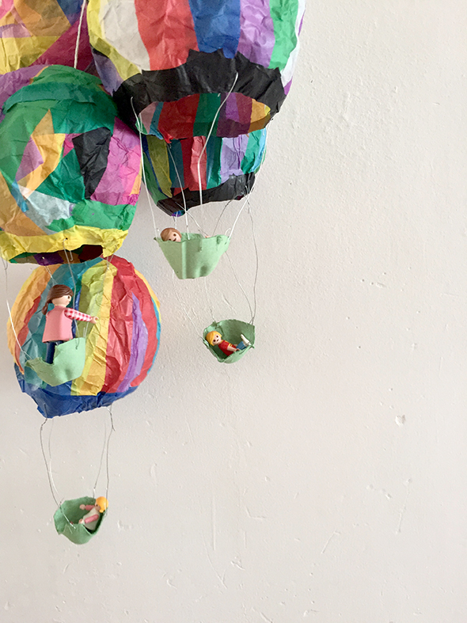

Pega papel coloreado transparente con pegamento ( de papel de pared) a un globo.
Cuando el pegamento se seca, se puede romper el globo y sacar.
Hemos adjuntado un alambre y cartón de huevo.
Así vuelan las figuras de Playmobil por el apartamento!
Los globos son de Carolina, Alvaro, Andrea Hannah y Noah.
Glue colored transparent paper with glue ( of wall paper) to a balloon.
When the glue is dry, you can break the balloon and take it out.
We have attached a wire we egg carton.
So fly the Playmobil figures through the apartment!
The balloons are of Carolina, Alvaro, Andrea Hannah and Noah.
Klebe farbiges Transparentpapier mit Kleister um einen Luftballon.
Wenn der Kleber getrocknet ist, kann man den Ballon kaputt machen und herraus nehmen.
Mit Draht haben wir ein Eierkarton befestigt.
So fliegen die Playmobil Figuren durch die Wohnung!
Die Ballons sind von Carolina, Alvaro, Andrea Hannah und Noah.
